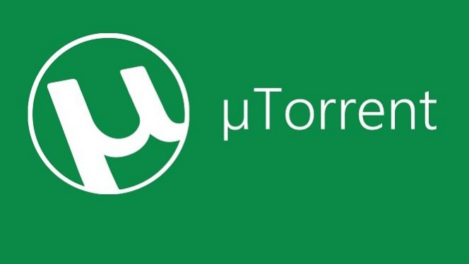
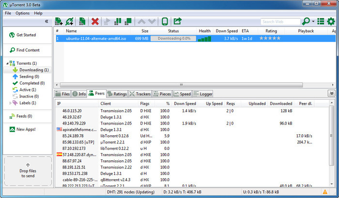
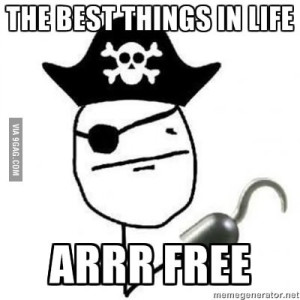

Majoritatea am descarcat macar o data un torrent, insa stim cu totii ce facem cu adevarat cand apasam butonul „download torrent”?
• CUM FUNCTIONEAZA?
Modul de functionare a torrentului nu este greu de inteles. Acesta foloseste tehnologia P2P (peer to peer), adica pe intelesul tuturor realizeaza o leagtura intre device-ul de pe care downloadezi torrentul si celealte device-uri care downloadeaza (sau au downloadat) torrentul pentru a descarca fisierele din torrent si in calculatorul tau. Persoanele participante la acea retea se numesc peers. Practic spre deosebire de descarcarile de pe un site de file sharing, fisierele din torrent nu se descarca de pe un server, ci din device-urile altor oameni ca si tine. Pentru o mai buna gestionare a descarcarilor, fisierele din torrent sunt impartite in parti (pieces). Sa presupunem ca utilizatorul X a pus un torrent la descarcat. Clientul de torrent (de exemplu Bittorrent) va „intreba” in toata reteaua creata intre cei care au pus torrentul la descarcat, cine are prima parte din torrent si il va lua de la unul dintre ei. Procedura se repeta pana cand utilizatorul X are toate partile torrentului. Cand acest lucru se intampla el are toate partile si devine seeder (donator). Daca utilizatorul Y pune la descarcat acelasi torrent. El va putea descarca partile atat de la cei de la care a descarcat X cat si de la X si tot asa…

Fereastra principala din uTorrent
• DE CE AR PUTEA FI ILEGAL?
In Romania descarcarea continutului protejat de drepturile de autor nu are prevazuta nicio pedeapsa, insa, dupa cum ati citit in paragraful anterior, prin descarcarea unui torrent dai mai departe altor utilizatori continutul protejat, fapta care se pedepseste cu amenda sau chiar cu inchisoare.
• DE CE NU POTI PATI NIMIC DIN PUNCT DE VEDERE LEAGAL?
Pe langa clasica scuza „toata lumea face asta” exista si cateva motive care te asigura ca nu poti pati nimic daca continui sa descarci de pe torrente. In primul rand nimeni nu poate dovedi ca tu ai fost in spatele calculatorului atunci cand ai downloadat torrentul. In al doilea rand, dupa cum am spus tu nu dai altor utilizatori fisiere intregi protejate de drepturile de autor, ci doar fragmente care singure sunt inutilizabile si nu sunt protejate de drepturile de autor.
• CONCLUZIE
Desi cel putin in Romania, nu o sa patesti nimic (in afara de contactarea catorva virusi/adware daca dai click pe tot ce misca) descarcand de pe torrente, asta nu inseamna ca este ok sa o facem abuziv. Prin descarcarea gratuita profitam de munca/creatiile unor firme/oameni care nu au intentionat sa distribuie produsul lor fara plata si nu cred ca vreunuia dintre noi ne-ar conveni acest lucru.
